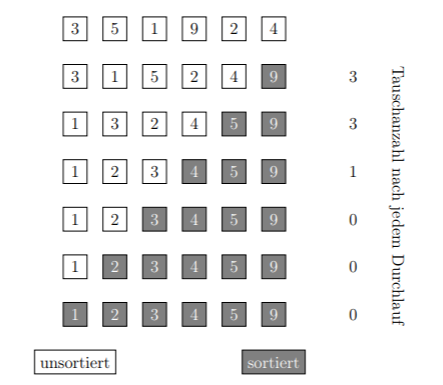

Professor Bit hat eine Herausforderung für euch vorbereitet:
- Legt mit den Handkarten die unsortierte Zahlenreihe 13; 1; 5; 3; 8 aus.
- Wendet die beiden Sortieralgorithmen nacheinander vollständig auf den ursprünglichen, unsortierten Datensatz an:
- Notiert nach jeder Runde die Anzahl der Vergleiche, die ihr gebraucht habt!
- Macht ein Foto eurer sortierten Karten + Vergleichsanzahl und zeigt es der Lehrkraft.
- Wenn ihr alles korrekt gemacht habt, erhaltet ihr die 4. Ziffer des Kryptex:
💡 Ihr könnt euch bei der Darstellung an dieser Abbildung orientieren – aber zählt Vergleiche statt Tauschvorgänge!
